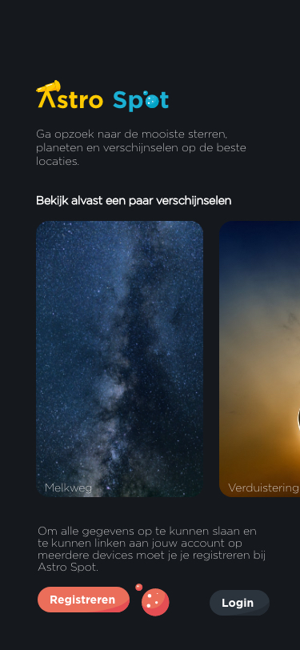
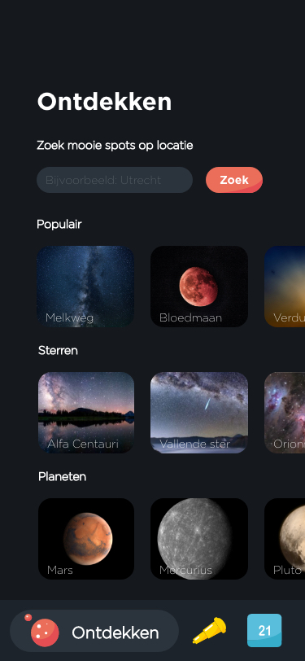
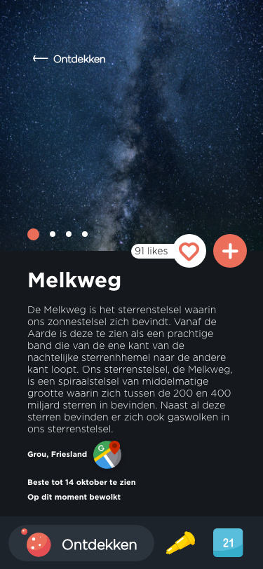
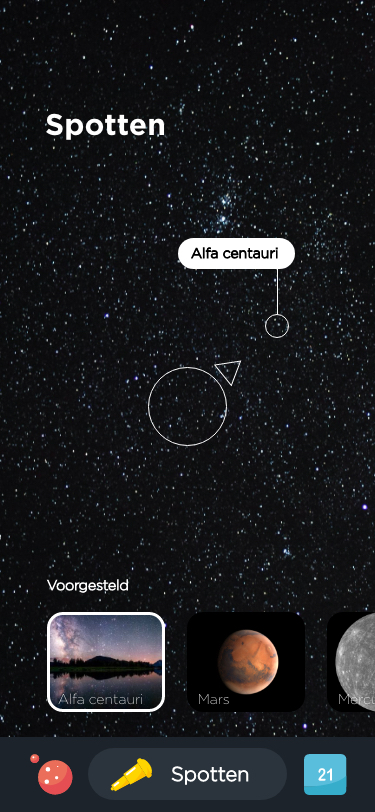
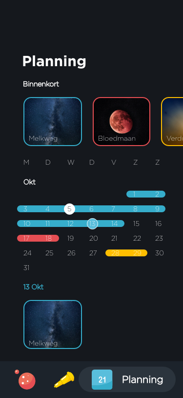
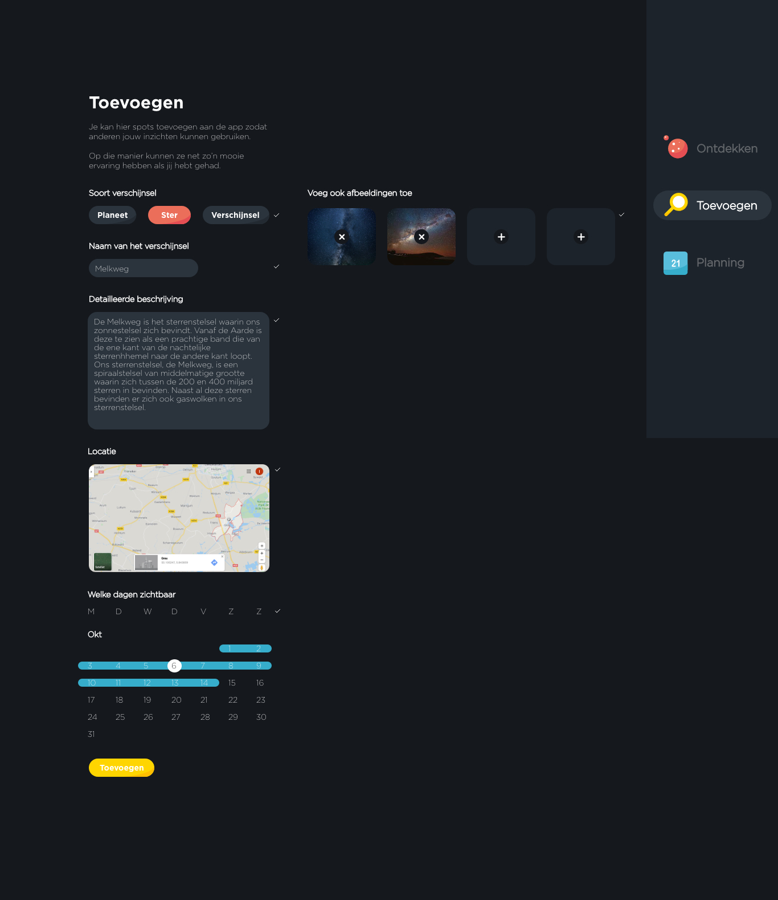

Astro spot
Prototyping
Astro spot is een online platform bereikbaar via mobiel, tablet en computer die jou helpt een sterrenkijk-reis te plannen.
Astro spot is een online platform bereikbaar via mobiel, tablet en computer die jou helpt een sterrenkijk-reis te plannen.
Project WEB - Communication and Multimedia Design (HvA)
Prototyping en design patterns.
Maak een interactieve reisplanner die een multidevice experience biedt.
Wanneer mensen sterren gaan kijken is het meestal een spontane gebeurtenis. Terwijl op jij op dat moment geen idee hebt wat er allemaal in het heelal speelt. Alle informatie die je kan vinden staat op verschillende plekken en het nodigt je niet echt uit om je erin te verdiepen.
Astro spot is een online platform bereikbaar via mobiel, tablet en computer die jou helpt een sterrenkijk-reis te plannen. Je kan uit verschillende verschijnsels kiezen en deze laten filteren op base van een locatie. Op die manier kan je naar een locatie voor een bepaalt verschijnsel maar kan je ook op een specifieke locatie opzoek naar een mooi verschijnsel. Alle verschijnsels die je opslaat komen in jouw planning terecht zodat jij gemakkelijk terug kan vinden waar je naar wilt kijken. Ook zit er een spotter in de app (voor mobiel en tablet) zelf waar je met augmented reality gemakkelijk het verschijnsel kan spotten. Verder kan je via de computer verschijnsels toevoegen als gebruiker zodat je jouw kennis kan delen met andere gebruikers.
     Bij het maken van ‘Astro spot’ heb ik mij veel gefocust op welke taak in welke situatie wordt uitgevoerd en de daarbij horende vorm voor de gebruiker. Vandaar dat ik er voor heb gekozen om het spotten alleen via een mobiel te doen. Deze gaat namelijk gemakkelijk mee op de locatie en heeft een camera aan de achterkant. Het toevoegen is alleen mogelijk via een computer zodat dit serieus wordt genomen en er geen postcultuur ontstaat maar een cultuur waarbij er waardige content op de applicatie verschijnt.
2/6